AnyPortrait > マニュアル > レンダリング順序と画像の切り替え
レンダリング順序と画像の切り替え
1.3.4
アニメーションが再生されたり、ゲームが実行される途中でメッシュのレンダリング順序を切り替える必要がある場合があります。
または、画像をスクリプトなしで切り替える必要がある場合もあります。
この機能の特徴は、他のモディファイヤとは異なり、「連続性がない」とのことです。
従ってこの2つの機能は、他のモディファイヤとは異なる方法で設定する必要があります。
AnyPortraitではこれを「Extra（エクストラ）設定」と呼びます。
制御パラメータでレンダリングの順序を制御

(1) 制御パラメータを追加します。ここで「ExtraOption」と名前を指定しました。
(2) メッシュグループを選択します。
(3) 「Modifier」タブを選択し、「Add Modifier」ボタンを押します。
(4) 「Morph（Controller）」モディファイヤや「Transform（Controller）」モディファイヤを選択して追加します。
レンダリングの順序と画像を交換することができるモディファイヤは、次の6種類です。
- Transform (Controller)
- Transform (Animation)
- Morph (Controller)
- Morph (Animation)
- Color Only (Controller)
- Color Only (Animation)
「子メッシュグループ」を対象にレンダリングの順序を変更することも可能です。
ただし、Morphモディファイアはメッシュのみに適用されるため、この場合は「Transform」モディファイアまたは「Color Only」モディファイアをご利用いただくことをお勧めします。
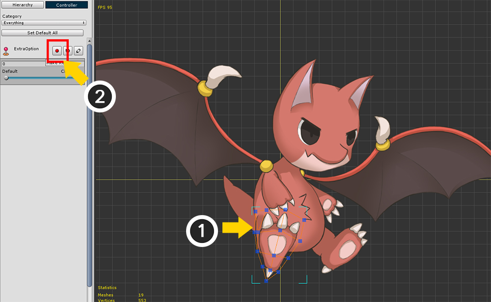
(1) レンダリング順序を変更したいメッシュを選択します。
(2) 制御パラメータのキー生成ボタンを押して、モディファイヤにメッシュを登録します。

(1) 制御パラメータのスライダーを動かして、(2) 第二のキーを生成します。

(1) モディファイヤの設定画面で、「Extra Option」ボタンを押して「Extra設定」を有効にします。

(1) 編集モードをオンにします。 （ショートカットキー： A ）
(2) 画面上部の「Extra設定」の「Set」ボタンを押して、「Extra Properties」ダイアログを開きます。

「Extra設定」を有効にするためには、合計3つのステップを必要です。
- ステップ1：モディファイヤの「Extra Option」オン
- ステップ2：選択されたメッシュの制御パラメータのキーまたはキーフレームでの「Extra Option」オン
- ステップ3：レンダリングの順序（Depth）の変更または画像の変更をオン
上記のステップ1は活性化されたので、次の2、3の手順を実行する必要があります。
(1) 「Extra Option Off」ボタンを押して、「Extra Option On」の状態にします。 （2段階）
(2) 「Depth Option Off」ボタンを押して、「Depth Option On」の状態にします。 （3段階）
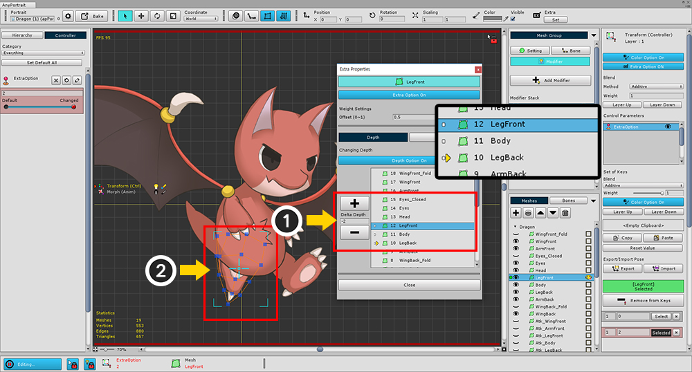
(1) 「+」ボタンや「-」ボタンを押してレンダリング順序に対応するDepthを変更することができます。
または「Delta Depth」の値を変更して、レンダリングの順序を変更することができます。
(2) ここで「Depth」の値を「-2」だけ移動して、足が体の後ろに移動してレンダリングされます。
リストでは、すべてのメッシーナのメッシュグループが表示されず、レンダリングの順序を変えることができる対象のみが表示されます。
メッシュだけでなく、サブのメッシュグループもレンダリング順序を変更することができます。
ただし、クリッピングされたメッシュは、移動が不可能です。
「Extra Properties」ダイアログのメイン画面構成は次のとおりです。
1. Extra Optionボタン : 現在のキーの「Extra Option」を切り替えます。
2. Offset : Extra設定が適用される範囲を設定します。値が1に近いほど広い範囲でExtra設定が適用されます。
3. Depthは、Imageタブ : レンダリング順序を切り替えることか、イメージを交換するかについて、それぞれ設定することができます。同時に指定することも可能です。
4. Depth Optionボタン : Depthタブが入っている場合、レンダリングの順序の切り替え（Depth Option）を切り替えます。
5. Depth変更ボタンと、入力ボックス : レンダリング順序を変更することができます。
6.オブジェクトリスト : レンダリング順序を変えているメッシ、メッシグループのリストと一緒に、現在のDepthを矢印で確認することができます。
7. Closeボタン : ダイアログを閉じます。


今制御パラメータのスライダーを動かすと、足メッシュがレンダリングされる順序が変わることを確認することができます。
制御パラメータで画像切り替え
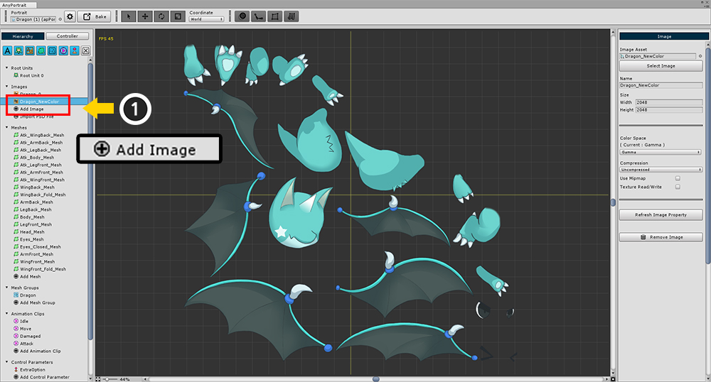
テストのために新しいイメージを追加します。
基本的なAtlasの構造が似ていてください。

今回は頭メッシュの画像を変えてみましょう。
(1) の頭部（Head）メッシュを選択します。
(2) 「Add to Keys」ボタンを押して、このモディファイヤと制御パラメータにメッシュを追加します。

メッシュを選択し、「編集モード」をオンにし、次の手順を実行します。
(1) 画面上部のExtraの「Set」ボタンを押します。
(2) 「Extra Option」ボタンを押して「On」状態に変更します。
(3) 「Image」タブを選択します。
(4) 「Image Option」ボタンを押して「On」状態に変更します。
(5) 「Select Image」ボタンを押します。
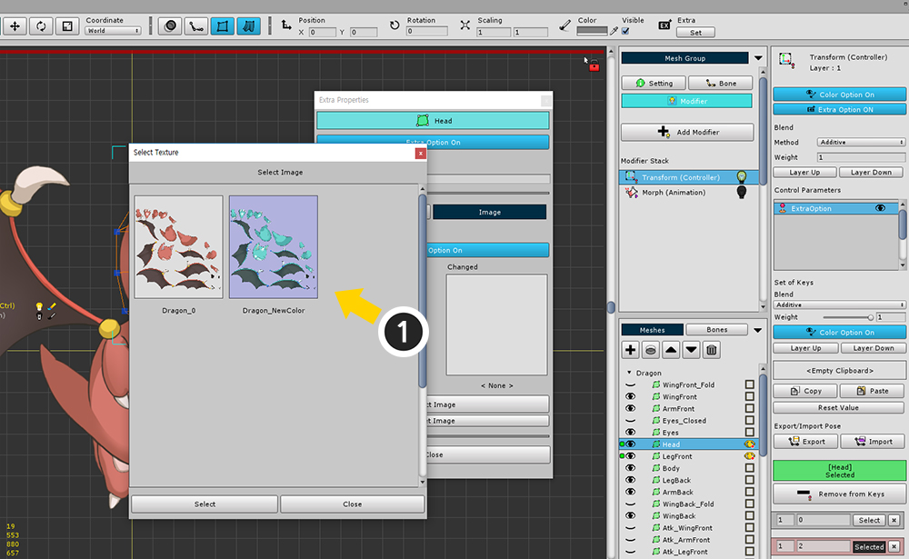
変更したい画像を選択し、「Select」ボタンを押します。

画像が選択されると、「Changed」スロットに画像が登録されており、実際の髪メッシュの画像が変更されたことを見ることができます。
「Extra Properties」ダイアログのイメージの交換の画面構成は次のとおりです。
1. Image Optionボタン : Imageタブがオンの場合、イメージを転換する設定を切り替えます。
2. Original / Changed Slot : 変更前、後の画像が表示されます。
3. Select Imageボタン : どのような画像に変換されるかを選択することができます。
4. Reset Imageボタン : 選択した画像を解除します。

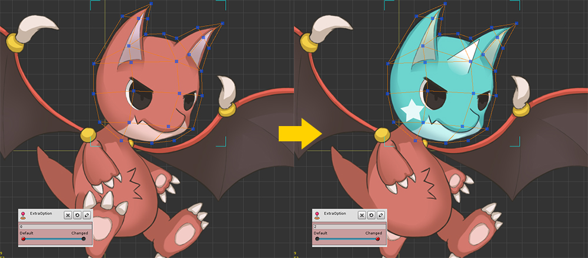
制御パラメータのスライダーを動かすと頭メッシュの画像が変更されます。
アニメーションExtra設定を適用
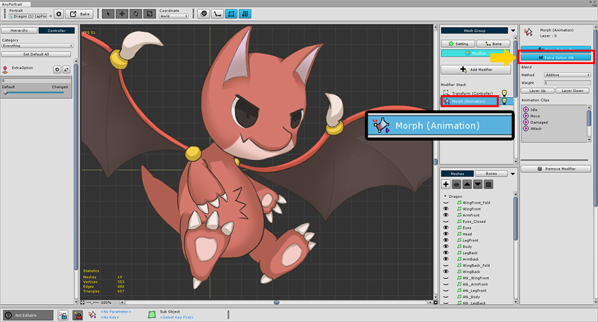
「Morph（Animation）」や「Transform（Animation）」モディファイヤを利用すれば、アニメーションでもExtra設定を適用して、レンダリングの順序を変更したり、イメージを変えることが可能です。
アニメーションを作成する前に、モディファイヤの設定画面で、「Extra Option」をオンにします。

またはアニメーション作業画面で (1) 「タイムラインのレイヤー」を選択し、(2) 「Extra Option」ボタンを押して有効にすることができます。

アニメの「編集モード」をオンにし、(1) キーフレームを選択します。
(2) Extra設定の「Set」ボタンを押します。
（編集モードがオンになっていない場合Setボタンを押すことができません。）

残りのプロセスは、制御パラメータを用いた設定方法と同じです。
ここで例として、画像を変える過程を復習してみましょう。
(1) 「Extra Option」ボタンを押して「On」にします。
(2) 「Image」タブを選択します。
(3) 「Image Option」ボタンを押して「On」にします。
(4) 「Select Image」ボタンを押して切り替えされるイメージを選択します。
今、アニメーションが再生されると、画像がリアルタイムで変わるのを見ることができます。
アニメーションでの「Extra Properties」ダイアログの画面構成は少し異なります。
1. Target Frame
: 現在選択されてキーフレームの位置がボタンに表示されます。
左、右ボタンを押すと、前、次のキーフレームに移動され、数字ボタンを押すと、アニメーションスライダーを選択したキーフレームに移動します。
2. Offset :
Extra設定が適用されるオフセットの範囲は、以前、次のキーフレームに対してそれぞれ適用することができます。
（次のキーフレームのオフセットがデフォルトが0.5ではない0.6である理由は、次のキーフレームのExtra設定範囲と重なる作成ためです。）

Extra設定の「Offset」について
Extra設定で「Offset」は、Extra設定が適用される範囲を意味します。
位置や回転、サイズ、色などの「連続」の変化は、Offsetは必要ありません。
しかし、Extra設定は「連続していない」の変化であるため、ある時点から適用する必要がありかどうかを設定する必要があります。
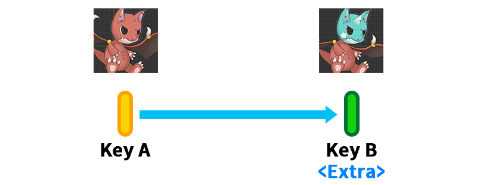
Extra設定がない「Key A」とExtra設定が適用された「Key B」があるとしましょう。
制御パラメータやアニメーションのフレームなどのキー値が変わると表示される結果も変わるでしょう。

「Offset」はExtra設定が適用された「Key B」からの距離です。
数字が大きくなるほど領域が大きくなり、「Offset」が（最大値である）1になると、「Key A」までの範囲が拡大されます。
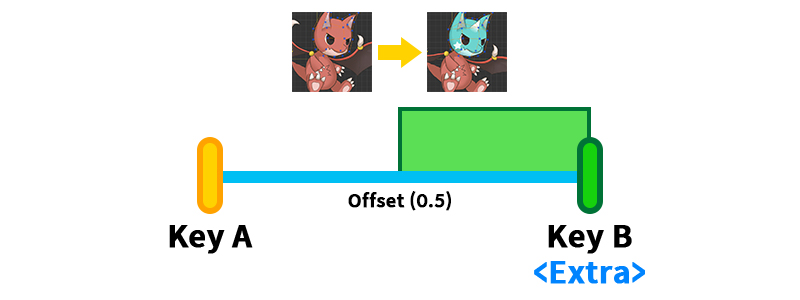
「Offset」値は、基本的に「0.5」です。
このとき「Key A」と「Key B」の中間地点で画像が切り替わります。

「Offset」値を減らし「0.2」に設定すれば、
制御パラメータやアニメーションのフレームの値が「Key B」により近くなければ、画像が切り替わります。

「Offset」値を「0.8」に増加させると、
制御パラメータやアニメーションのフレームの値が「Key A」から少し変わってもすぐにイメージが転換されることです。

アニメーションの場合は、「Offset」の値が2つあります。
「前のキーフレーム」と「次のキーフレーム」との比較のためのOffsetをそれぞれ設定することができます。
2つのOffset値は適用される方向は違っても値が大きいほど範囲が増加することは同じです。

ただし、ここで注意すべき点があります。
アニメーションは、「アニメーションカーブ」によって補間重みが決定されます。
したがってOffsetもアニメーションカーブの形に影響を受けます。
単に再生されるフレームの位置ではなく、カーブによって補間された重みに基づいてExtra設定の適用するかどうかが決定されます。
(1) アニメーションカーブの補間された重みを対象に、Offsetの範囲を決定します。
(2) アニメーションカーブの形に応じて、どのフレームからExtra設定が適用されるかを決定します。
複数のオブジェクトを対象にExtra設定を適用
1.3.4
AnyPortrait v1.3.4から複数のオブジェクトにExtra設定を一度に適用することができます。

(1) モディファイヤに登録された複数のメッシュを選択します。
(2) 制御パラメータのキーまたはアニメーションのキーフレームが選択された状態で、画面上部の「Setボタン」を押します。
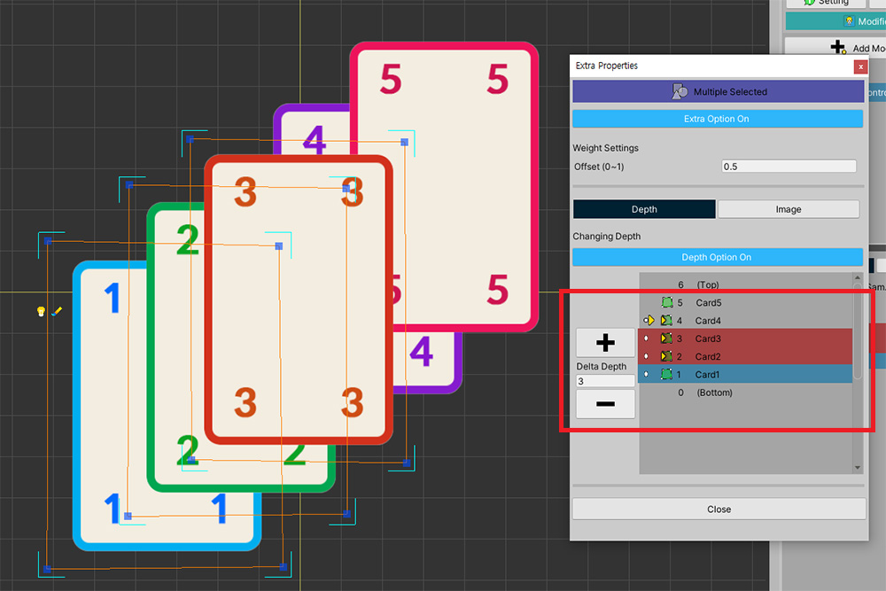
選択されたメッシュのDepthを同時に制御することができます。
この時、黄色の矢印で表示されるDepth変化値は、選択されたメッシュのいずれかにのみ表示されます。
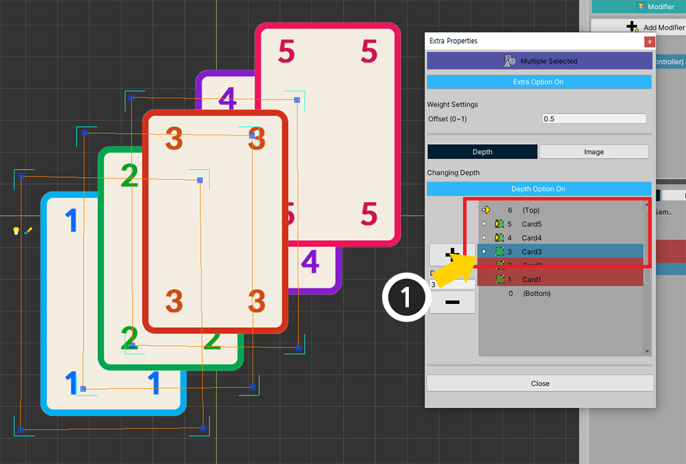
リストから選択されたメッシュのうち、他の一つを選択すると、そのメッシュのDepth変化値が表示されます。
この時、注意すべき点があります。
現在Extra設定のリストに表示されるのは、「選択したオブジェクトのDepthの変化値」です。
現在選択されていないオブジェクトのExtra設定は、このダイアログで表示されません。
したがって、異なるオブジェクトのExtra設定による結果は、ワークスペースで確認する必要があります。
もし別のオブジェクトのDepthの値が同じになってしまうとどうなるのかを確認してみましょう。

(1) メッシュを選択して、(2) Depthを「Top+10」に設定しました。
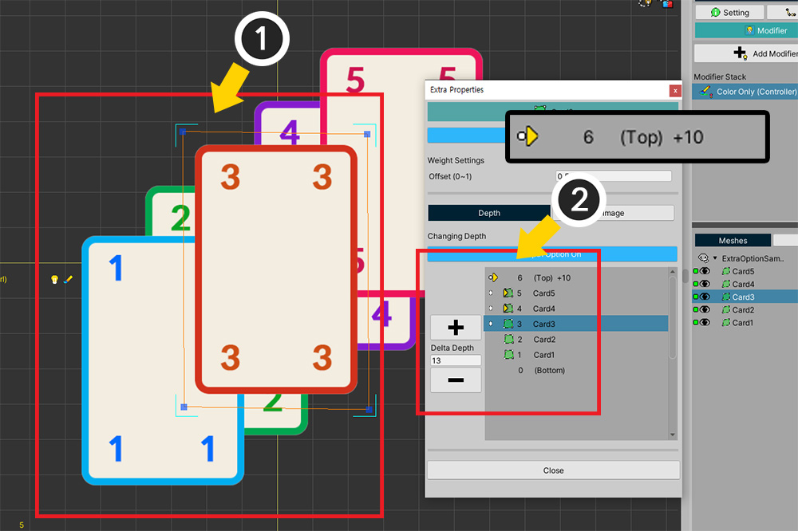
(1) 同様に、他のメッシュを選択して、(2) 同じように、「Top+10」に移動するように設定しました。
二つのメッシュのDepthはようなった状態です。
同じDepthのメッシュを確認してみるの既存の順にレンダリングがされていることを見ることができます。
オブジェクトが同じDepthの場合は、v1.3.4から下の規則に基づいて、レンダリングの順序が決定されます。
- 同じDepthの場合、既存のレンダリング順序が反映されます。
- Detphが増加する要求が減少する要求よりも優先して処理されます。
- Depth増減要求中、先に処理されることが、その方向にもっとDepthが変化すると考えられる。